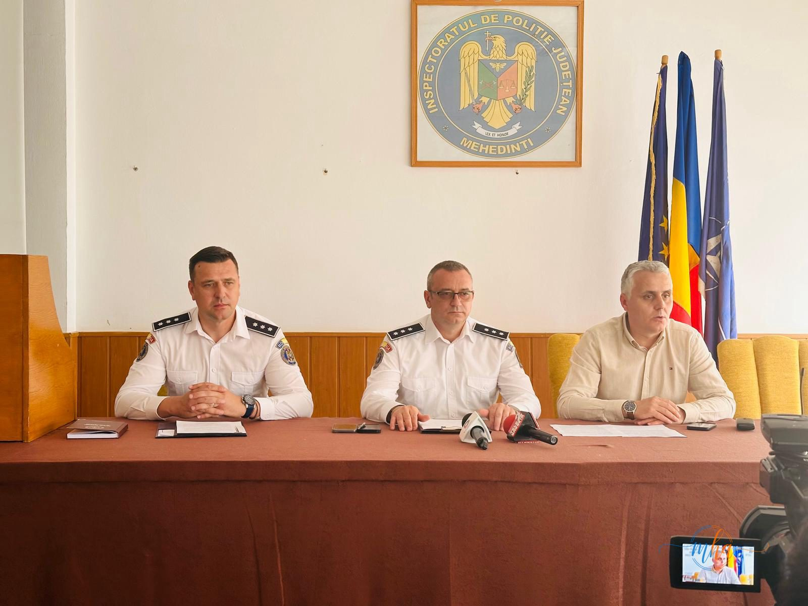
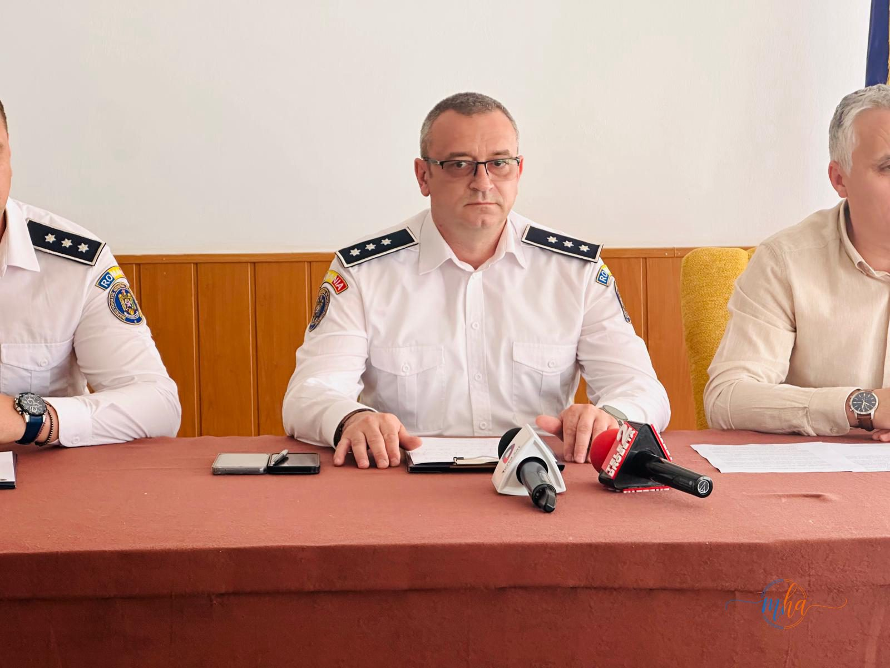

*SIGURANȚA ȘCOLARĂ – PRIORITATEA POLIȚIȘTILOR MEHEDINȚENI*
Siguranța școlară reprezintă o prioritate majoră a Poliției Române, materializată prin acțiuni coordonate la nivel național și local de către Birourile de Siguranță Școlară.
În anul școlar 2025-2026, principalele activități în domeniul siguranței în unitățile de învățământ din județul Mehedinți, au avut drept reper măsurile dispuse prin Planul Național de Combatere a Violenței Școlare, acțiunile vizând atât latura de combatere a faptelor ilegale săvârșite în incinta și zona adiacentă unităților de învățământ, cât și latura de prevenire și educare a elevilor în spiritul respectării legii, pentru conștientizarea pericolelor.
De la debutul anului școlar și până în prezent au fost organizate 1255 de activități informativ-preventive, care au vizat aspecte privind prevenirea absenteismului școlar, fenomenului de bullying/cyberbullying, consumului de droguri, traficului de persoane, infracțiunilor comise cu violență și respectarea legislației referitoare la răspunderea penală a minorilor.
Activitățile desfășurate au avut 35911 beneficiari - elevi, cadre didactice și părinți/aparținători.
Înfracționalitatea sesizată în mediul școlar a scăzut, în unitățile de învățământ fiind înregistrate 11 fapte de natură penală, cu 8 mai puține decât aceeași perioadă de referință a anului școlar 2024-2025.
În zona adiacentă acestora, nu au fost sesizate fapte de natură penală.
Totodată, în scopul prevenirii faptelor antisociale, fenomenului infracțional în mediul școlar, în anul 2025-2026, la nivelul Inspectoratului de Poliție Județean Mehedinți au fost iniţiate și/sau implementate în colaborare cu alte instituții următoarele programe, proiecte și campanii:
1. Proiectul ”SCOATE VIOLENȚA ȘCOLARĂ DIN ANONIMAT” 2. “PREVENTIN”, proiectul de prevenire în domeniul siguranţei şcolare, a actelor de violență și a fenomenului de bullying și prevenirea consumului de droguri, criminalității informatice și traficul de persoane, în colaborare cu reprezentanți C.J.R.A.E Mehedinți şi I.S.J. Mehedinţi. 3. Campanie de informare si constientizare pentru prevenirea pornografiei infantile si a traficului de persoane ,,INTIMITATEA E DOAR A TA”; 4. Campanie de Informare si Constientizare pentru Prevenirea Traficului de Persoane ,,TRAFICUL DE PERSOANE FURA VIETI!”, în colaborare cu DGASPC Mehedinți, ISJ Mehedinți și CJRAE Mehedinți, Biblioteca Județeană ”I.G. Bibicescu”, Casa Corpului Didactic; 5. Proiect de Parteneriat Educațional ,,STOP VIOLENȚEI, START PRIETENIEI!” în colaborare cu ISJ Mehedinți și CJRAE Mehedinți și 15 unități de învățământ preuniversitar din județul Mehedinți; 6. Proiect educațional de combatere a violenței școlare ”STOP VIOLENȚEI” în colaborare cu Școala Gimnazială Jiana; 7. Proiect Educational Caritabil ,,ARIPI DE SPERANTA,, în parteneriat cu Școala Gimnazială nr. 6 , CJRAE Mehedinți, ISJ Mehedinți, Palatul Culturii ”Theodor Costescu”, Palatul Copiilor, 4 unități de învățământ 8. Acord de parteneriat în cadrul proiectului ”ÎMPREUNĂ PRINDEM CURAJ” cu Colegiul Național ”TRAIAN” 9. Acord de parteneriat parte din proiectul educațional ”SPECIALI ȘI CURAJOȘI”, ”ÎMPREUNĂ PRINDEM CURAJ” cu CSEI ”C-tin Pufan”; 10. Proiect educațional de prevenire a violenței ,,STOP VIOLENȚEI” în colaborare cu Liceul Tehnologic ”Tudor Vladimirescu” Șimian. 11. ”MÂINI ÎNTINSE. UNIȚI PENTRU VIAȚĂ” în colaborare cu Consiliul Județean al Elevilor Mehedinți și ISJ Mehedinți.
În săptămâna 25-29.05.2026, la nivel național se desfășoară evenimentul ”SĂPTĂMÂNA ȘCOALĂ ÎN SIGURANȚĂ”, dedicat siguranței în mediul școlar, în acest sens, polițiștii din cadrul Biroului Siguranța Școlară organizează activități în mai multe unități de învățământ din județul Mehedinți, activități ce constau în sesiuni de informare, instumente ale comunicării asertive, teatru-forum, photo-voice, acțiuni pentru prevenirea delincvenței juvenile și victimizării minorilor.
Galerie foto

